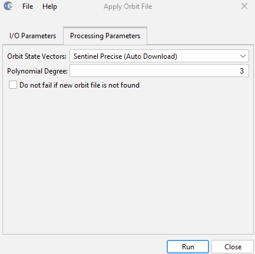

Apply Orbit File Operator
The orbit state vectors provided in the metadata of a SAR product are generally not accurate and can be refined
with the precise orbit files which are available days-to-weeks after the generation of the product.
The orbit file provides accurate satellite position and velocity information. Based on this information, the
orbit state vectors in the abstract metadata of the product are updated.
Orbit Files Supported
The operator supports ASAR, ERS, Sentinel-1, KOMPSAT-5 and BIOMASS products.
- For Sentinel-1, Restituted orbit files and Precise orbit
files may be applied. Precise orbits are produced a few weeks after
acquisition. Orbit files are downloaded automatically from the STEP
server (step.esa.int). If a file cannot be found, the error message points to the Copernicus Data Space
Ecosystem, from where it can be downloaded and placed in the local orbit folder.
- For ASAR product, DORIS precise orbit file generated by the Centre de Traitement Doris Poseidon (CTDP)
and Delft University can be applied. It provides the satellite positions and velocities in ECEF
coordinates every 60 seconds.
- For ERS product, DELFT precise orbit file generated by Delft Institute for Earth-Oriented Space Research (DEOS)
can be applied. It provides the satellite ephemeris information (latitude, longitude, height) every 60 seconds.
The operator first converts the satellite position from (latitude, longitude, height) to ECEF coordinates,
then computes the velocity information numerically.
- Also for ERS product, PRARE precise orbit file generated by Delft University can be applied. It provides
the same information every 30 seconds.
Major Processing Steps
To refine the orbit state vectors, the following steps are performed:
- Get the start time of the source product;
- Find orbit file with user specified type and the product start time;
- For each orbit state vector in the metadata, get its UTC time;
- Compute new orbit state vector for the UTC time using interpolation.
Parameters Used
The following parameters are used by the operator:
- Orbit State Vectors: User can select the type of orbit file for the application. The following orbit
file types are listed in the dialog (default:
Sentinel Precise (Auto Download)):
Sentinel Precise (Auto Download)Sentinel Restituted (Auto Download)DORIS Preliminary POR (ENVISAT)DORIS Precise VOR (ENVISAT) (Auto Download)DELFT Precise (ENVISAT, ERS1&2) (Auto Download)PRARE Precise (ERS1&2) (Auto Download)Kompsat5 PreciseBiomass Precise (MAAP) (Auto Download)
If the selected type does not suit the mission of the product, the operator replaces it with the default
type of that mission (for example Sentinel Precise for Sentinel-1).
Orbit files marked Auto Download are fetched when they are not already in the local auxiliary data
folder. Kompsat5 Precise files are not downloaded: if none is found, the operator reports where
to place the file.
For BIOMASS products the orbit state vectors already come from the product annotation, so the operator passes
such a product through unchanged.
- Polynomial Degree (default 3): The polynomial degree used for the interpolation.
- Do not fail if new orbit file is not found (default: off): If this option is selected, the operator will not
fail if the orbit file is not found. The operator will continue to process the product with the original
orbit state vectors.

References
- Scharroo, R., Visser, P. (1998). Precise orbit determination and gravity field improvement for the ERS satellites. Journal of Geophysical Research: Oceans, 103(C4), 8113–8127. doi:10.1029/97JC03179
- Peter, H., Jäggi, A., Fernández, J., Escobar, D., Ayuga, F., Arnold, D., et al. (2017). Sentinel-1A – First precise orbit determination results. Advances in Space Research, 60(5), 879–892. doi:10.1016/j.asr.2017.05.034
Processing parameters (reference)
GPT operator: Apply-Orbit-File. Generated from the operator source; parameter names are those used in GPT and graph XML.
| Parameter | Type | Default | Allowed values | Unit | Description |
|---|
orbitType | String | Sentinel Precise (Auto Download) | Sentinel Precise (Auto Download), Sentinel Restituted (Auto Download), DORIS Preliminary POR (ENVISAT), DORIS Precise VOR (ENVISAT) (Auto Download), DELFT Precise (ENVISAT, ERS1&2) (Auto Download), PRARE Precise (ERS1&2) (Auto Download), Kompsat5 Precise, Biomass Precise (MAAP) (Auto Download) | | Orbit State Vectors |
polyDegree | int | 3 | | | Polynomial Degree |
continueOnFail | Boolean | false | | | Do not fail if new orbit file is not found |
Background
Prerequisites
- A SAR product from a supported mission (ASAR, ERS, Sentinel-1, KOMPSAT-5 or BIOMASS); the chosen orbit type must suit the mission
Next step